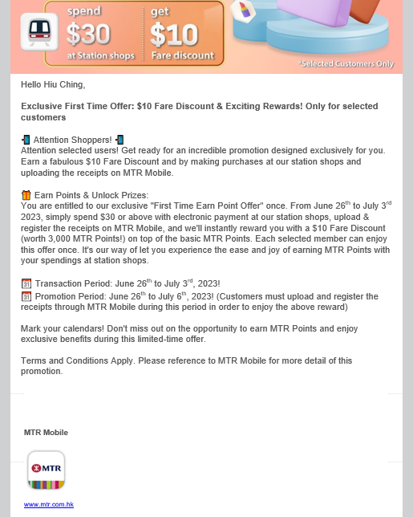
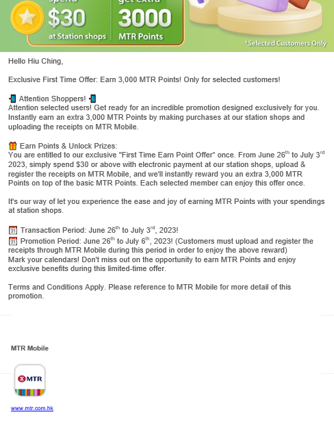
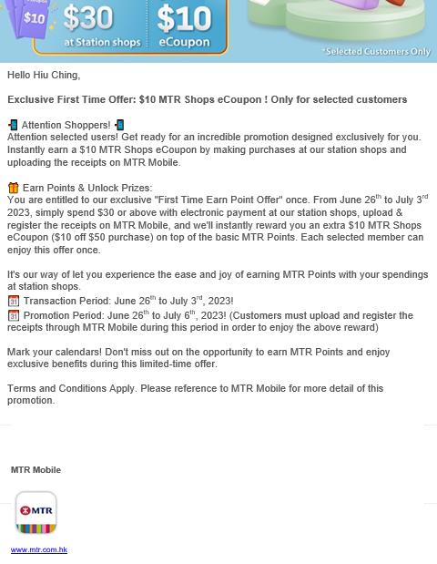
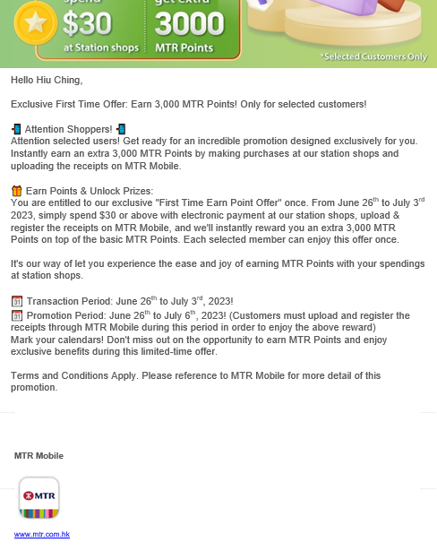
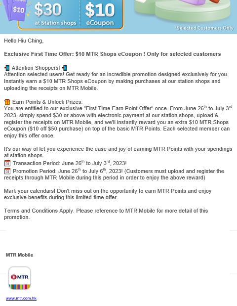
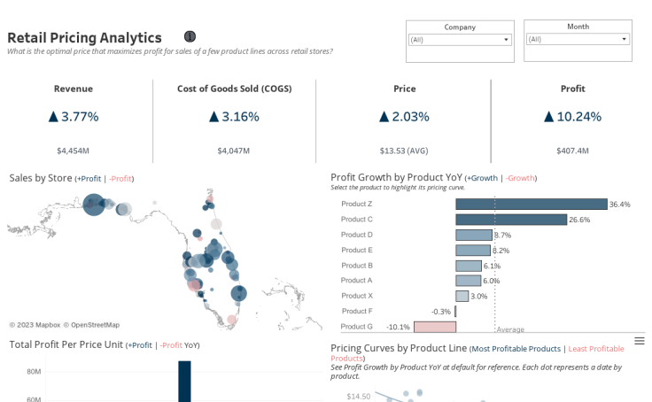
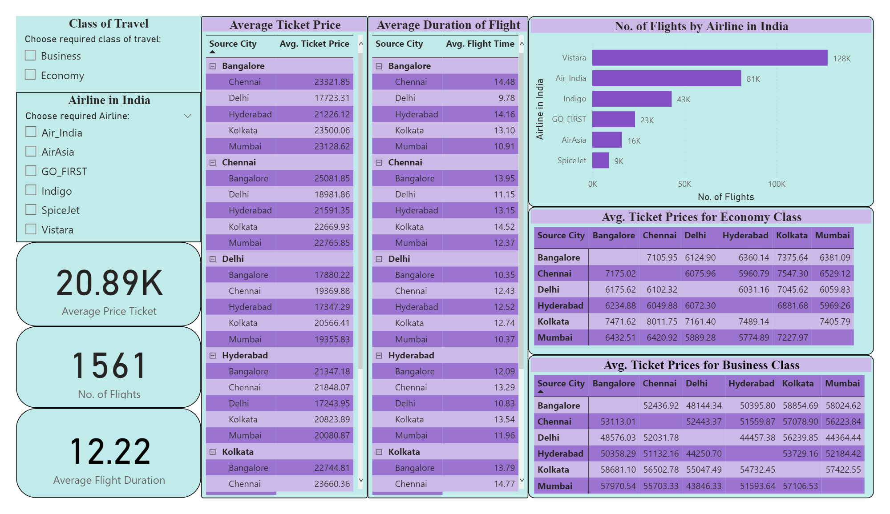
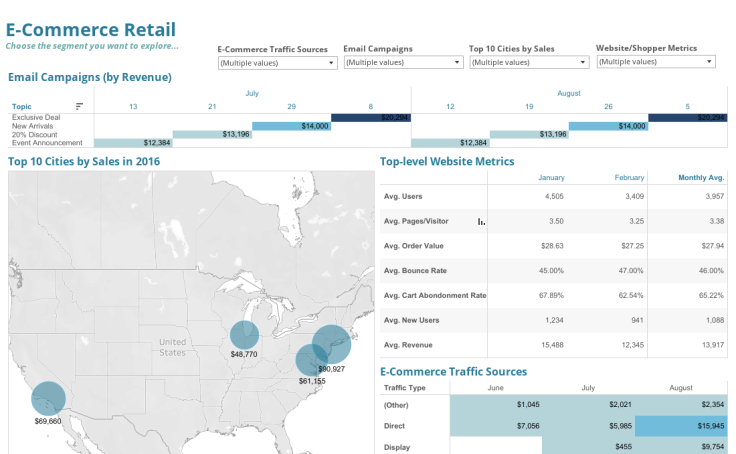
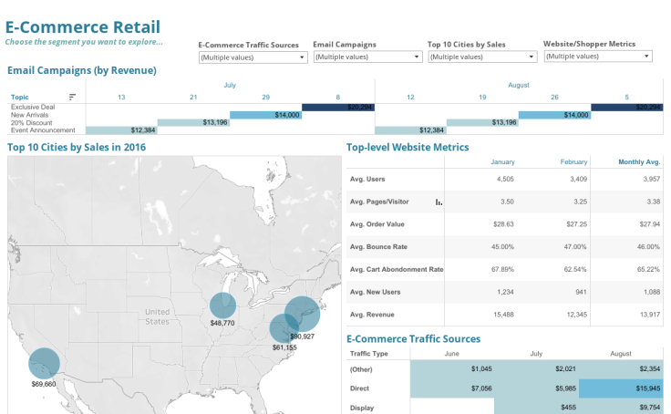

This is My
Resume/CV
Summary
I am a data-driven marketing enthusiast with a Bachelor's degree in Business Administration from The Hang Seng University of Hong Kong. Skilled in data analysis, Excel, Data Visualization and data-driven marketing campaigns.
June 1, 2023 - August 31, 2023
MTR Corporation Limited 香港鐵路有限公司
Summer Intern at Station Retail
•Proficient in data analysis techniques, utilizing Excel to create, clean, and manipulate datasets for insightful decision-making.
•Skilled in data visualization, effectively presenting complex information through charts, graphs, and interactive dashboards.
•Knowledgeable in using Power BI to analyze and visualize data, enabling data-driven insights for MTR Corporation Limited.
•Utilized Python for data gathering and storage, enhancing data collection efficiency and supporting the development of the website project.
•Providing support for MTR Mobile, ensuring its seamless operation and enhancing user experience.
•Conducting data analysis to gather insights and contribute to informed decision-making processes.
•Contributing to streamline projects aimed at optimizing operational processes and enhancing efficiency.
•Assisting in Smart Leasing projects, implementing innovative solutions to improve overall effectiveness.
•Collaborating with cross-functional teams to drive successful project outcomes and achieve organizational goals.
Past work
 



GREEN Hospitality
Digital Marketing and Event Management Intern
•Accomplished the creation of compelling daily social media posts and captivating captions across multiple channels, driving a remarkable 15% surge in audience engagement.
•Orchestrated the seamless execution of the prestigious Christmas Wonderland project in close collaboration with the esteemed Hong Kong Tourism Board, resulting in an impressive footfall of over 10,000 visitors.
•Revamped and optimized the design of email marketing campaigns, yielding a notable 15% surge in open rates and an impressive 25% increase in conversion rates, underscoring the efficacy of data-driven decisions in marketing endeavors.
•Implemented innovative event branding and promotional initiatives to enhance event visibility and attract sponsors and attendees.
•Conducted post-event evaluations and gathered feedback to continuously improve future event strategies and outcomes.
DHL Delta Logistics Limited
Operations coordinator
•Streamlined and optimized delivery dispatch system, achieving a high throughput of over 9,000 packages per hour with an error rate below 1%.
•Orchestrated efficient supply chain management by collaborating with multidisciplinary teams from 20+ vendors, resulting in a 95% accuracy and on-time delivery rate of 97%.
•Demonstrated expertise in meticulous review of invoices and shipping manifests, ensuring full compliance with local customs and international regulations.
•Utilized data management skills to handle operations and effectively manage inventory and goods, providing customers with exceptional service and satisfaction.
•Proficiently utilized Excel to organize, analyze, and visualize data for various projects and reports.
•Implemented data cleaning and data validation techniques to ensure data accuracy and consistency.
•Established robust tracking systems to monitor key performance indicators (KPIs) and project milestones.
Projects
Completed
- Real World Fake Data.
- DATA CLEANING IN SQL.
- COVID 19 DATA EXPLORATION.
- TABLEAU DASHBOARDS.
- SQL and Power Bi
In Progress
- Advance Python
- Excel Python
LEADERSHIP EXPERIENCE
- Member of University Society (EM-Power Society)
-
- Led as the Social Operations Officer for the EM-Power Society from July 2022 to June 2024.
- Ensured seamless execution of multiple society functions, adhering to all policies and guidelines.
- Played a pivotal role in organizing and planning various impactful events throughout the semesters.
- Represented the society at workshops and fairs, maintaining effective communication with external stakeholders.
- Produced original and compelling content for the society's social media accounts, enhancing its online presence.
- Student Mentor at UOW Collage
-
- Served as a dedicated Student Mentor at UOW College from August 2020 to July 2022.
- Provided valuable academic support by offering appropriate resources to students in need of additional assistance.
- Took on the responsibility of answering student queries and clarifying doubts related to their assignments.
- Offered guidance and support to students facing challenges with English language skills, fostering their language development and academic growth.
My Viusals
  
